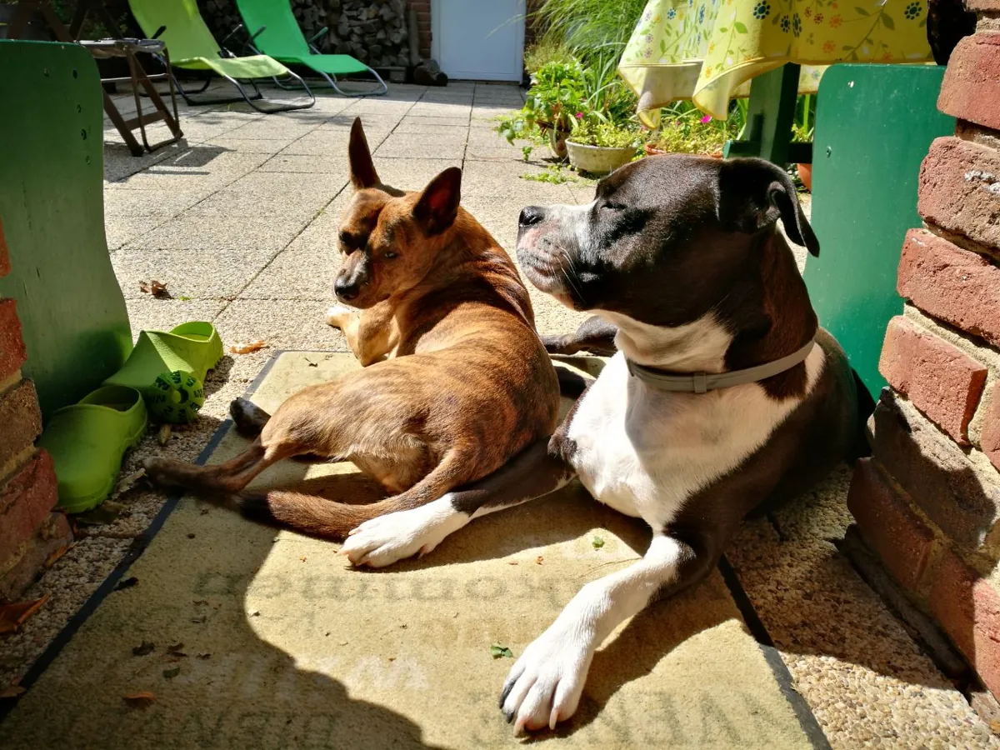
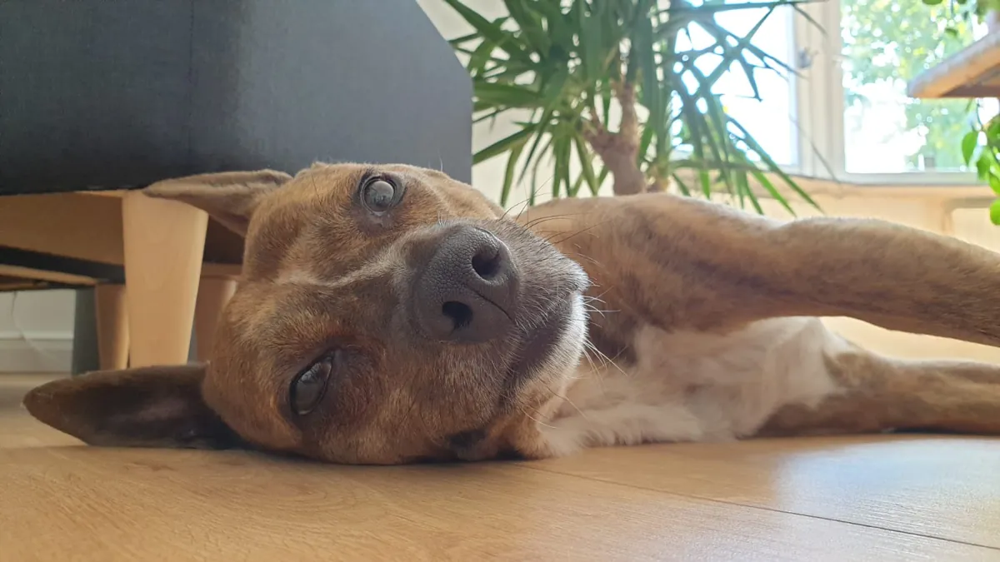

03 / Haltung & Recht
Listenhunde & Haltungsauflagen in NRW
Wissen einordnen. Verantwortung übernehmen.

„Listenhund“, Sachkunde und Wesenstest werden oft in einem Atemzug genannt. Sie beschreiben aber unterschiedliche Dinge: die rechtliche Einordnung des Hundes, Kenntnisse des Menschen und die Beurteilung des Hund-Halter-Gespanns. Diese Übersicht ist allgemeine Orientierung für Nordrhein-Westfalen. Der Leseplan und die Ortsinformationen wurden am 11. November 2026 ergänzt.
Was bedeutet „Listenhund“?
„Listenhund“ ist eine gebräuchliche Sammelbezeichnung. Das NRW-Gesetz unterscheidet gefährliche Hunde (§ 3), Hunde bestimmter Rassen (§ 10) und große Hunde (§ 11). Eine gesetzliche Rassezuordnung ist keine individuelle Verhaltensdiagnose. Auch die Einordnung von Kreuzungen und eine etwaige Gefährlichkeitsfeststellung gehören in die Hände der zuständigen Behörde.
| Gruppe | Einordnung | Wichtige Unterscheidung |
|---|---|---|
| § 3 | Pitbull Terrier, American Staffordshire Terrier, Staffordshire Bullterrier und Bullterrier sowie gesetzlich erfasste Kreuzungen. Zusätzlich im Einzelfall festgestellte gefährliche Hunde unabhängig von der Rasse. | Für die Haltung ist grundsätzlich eine Erlaubnis erforderlich; Sachkunde über die amtliche Tierärztin oder den amtlichen Tierarzt. |
| § 10 | Alano, American Bulldog, Bullmastiff, Mastiff, Mastín Español, Mastino Napoletano, Fila Brasileiro, Dogo Argentino, Rottweiler und Tosa Inu sowie gesetzlich erfasste Kreuzungen. | Besondere Erlaubnis- und Haltungsvoraussetzungen; anerkannte Sachverständige bzw. Stellen können ebenfalls zuständig sein. |
| § 11 | Ausgewachsen mindestens 40 cm Widerristhöhe oder mindestens 20 kg; soweit keine strengere Einordnung greift. | Anzeige und Nachweise gegenüber der Behörde; Sachkunde auch durch von der Tierärztekammer benannte Tierärzte möglich. |
LHundG NRW: §§ 3, 4, 6, 10 und 11 ↗ · Landwirtschaftsministerium NRW: Hunde ↗
Sachkundenachweis: Wissen des Menschen
Wer sich auf § 3 oder § 11 vorbereitet, lernt in weiten Teilen dasselbe Grundwissen: Verhalten, Gesundheit, Haltung und Erziehung. Ein allgemeiner Katalog kann deshalb für beide Lernziele hilfreich sein. Daraus folgt aber nicht, dass die Prüfungen oder Bescheinigungen austauschbar sind. Entscheidend sind die Hundekategorie, die zugelassene Prüfstelle und die örtlichen Prüfungsbedingungen.
Für gefährliche Hunde nach § 3 wird die Sachkunde grundsätzlich durch die amtliche Tierärztin oder den amtlichen Tierarzt nachgewiesen. Bei § 10 sind zusätzlich anerkannte Sachverständige und Stellen zugelassen; für große Hunde nach § 11 kommen auch von der Tierärztekammer benannte Tierärzte infrage. Eine §-11-Bescheinigung reicht für § 3 nicht aus. Ein Nachweis für eine Kategorie mit höherem Gefahrenpotenzial kann dagegen für eine niedrigere Kategorie anerkannt werden. Lass einen vorhandenen Nachweis vorab von der zuständigen Behörde prüfen.
Für § 3 kann die Kenntnisprüfung nach der Landesverordnung als Fachgespräch oder vergleichbares schriftliches Verfahren stattfinden. Es gibt keine einzige NRW-weit identische Online-Prüfung. Beispiel Köln: Die Stadt nennt 34 Fragen und mindestens 24 vollständig richtige Antworten. Für § 11 beschreibt die Tierärztekammer Nordrhein 30 Fragen mit Informationsgespräch, ohne feste veröffentlichte Fehlerquote. In dieser Lernhilfe sind die Testreihen entsprechend getrennt.
DVO LHundG NRW: § 1 ↗ · Verwaltungsvorschriften: Nr. 6.2 ↗ · Stadt Köln: Prüfungsablauf ↗ · Tierärztekammer: § 11 ↗
Wesenstest / Verhaltensprüfung: Hund und führende Person
Die Verhaltensprüfung beurteilt unter anderem Gehorsam und Reaktionen in Alltagssituationen – etwa gegenüber Menschen, anderen Hunden, Bewegung oder ungewohnten Reizen. Sie ersetzt nicht den Sachkundenachweis des Menschen. Ein bestandenes Ergebnis kann bei Hunden nach § 3 Abs. 2 oder § 10 Grundlage eines Antrags auf Befreiung von bestimmten Leinen- und/oder Maulkorbpflichten sein. Für im Einzelfall gefährliche Hunde nach § 3 Abs. 3 ist diese reguläre Befreiungsmöglichkeit nach § 5 Abs. 3 nicht vorgesehen.
Bestanden heißt nicht automatisch befreit. Erst die zuständige Behörde entscheidet über den Antrag und dessen Umfang. Andere gesetzliche oder örtliche Leinenpflichten können trotzdem weiter gelten. Weitere Aufsichtspersonen müssen gegebenenfalls mit dem Hund in die Prüfung einbezogen werden.
Für Mindestalter, Zulassung, Termine und benötigte Unterlagen ist die aktuelle Auskunft der zuständigen Stelle entscheidend. Die geltende Landesverordnung nennt für die Verhaltensprüfung ein Mindestalter von 24 Monaten. Einzelne kommunale Internetseiten enthalten noch andere Altersangaben; bei solchen Abweichungen sind die aktuelle Rechtslage und die Behörde maßgeblich.
Aktuelle DVO: § 3 Verhaltensprüfung ↗ · Verwaltungsvorschriften: Nr. 5.3 ↗ · Stadt Köln: Verhaltensprüfung/Wesenstest ↗

Wie weit bereiten die Fragenkataloge vor?
Der Themenabgleich vom zeigt eine breite Grundlage für Verhalten, Erziehung und Gesundheit. Einzelne Rechtsfragen ersetzen jedoch keinen vollständigen Leseplan. Die folgende Einschätzung ist eine redaktionelle Themenbewertung, keine amtliche Freigabe oder vollständige fachliche Prüfung aller Lösungen. Übertragbarkeit auf deine Prüfung bitte mit der Prüfstelle klären.
| Thema | Im Trainer vorhanden | Zusätzlich lernen |
|---|---|---|
| Verhalten und Gefahrensituationen | Viele Fragen und Körperhaltungsbilder, etwa Rhein-Erft 203: 1, 6 und 85. | Das Wissen auf neue Alltagssituationen übertragen und Antworten begründen. |
| Erziehung und Gesundheit | Breite Themenauswahl, etwa Rhein-Erft 203: 5, 9, 140 und 158. | Zusammenhänge verstehen; die Auswahlantworten sind keine tierärztliche Einzelfallberatung. |
| Tierschutz-Grundlagen | Bedürfnisse, Haltung und Trainingsmittel, etwa Rhein-Erft 203: 32, 64, 174 und 194. | TierSchG §§ 1–3 und die konkreten Haltungspflichten der TierSchHuV lesen. |
| Haltungsdetails | Zwingerhaltung, Welpenaufzucht und Reinigung werden angesprochen. | Fristen, Maße und Ausnahmen nachlesen. Keine ausdrückliche Frage zur Vier-Stunden-Betreuung von Welpen bis 20 Wochen gefunden. |
| LHundG NRW | Zusatzfragen zu gefährlichen Hunden, etwa Rhein-Erft 203: 198–203; außerdem Rechtsfragen in Köln und Rhein-Erft 97. | Kategorien, Nachweiswege, Erlaubnis, Führungs- und Mitteilungspflichten systematisch lernen. Der 197er-Kammerkatalog allein deckt diese Zusatzfragen nicht ab. |
| Örtliche Prüfung und Behördenverfahren | Quellenbezogene Übungsprofile; keine Essener oder Bochumer Originalprüfung. | Aktuelle Bedingungen und benötigte Unterlagen direkt bei der zuständigen Stelle bestätigen lassen. |
Dein Leseplan: gemeinsame Rechtsgrundlagen
Die bundesweiten Tierschutzregeln und das LHundG NRW gelten unabhängig von der Stadt. Die folgenden Schwerpunkte orientieren sich auch an den Vorbereitungshinweisen der Stadt Essen.
- Tierschutzgesetz, besonders §§ 1–3: Schutz des Tieres, angemessene Versorgung, verhaltensgerechte Unterbringung und verbotene Handlungen bei Haltung und Ausbildung. TierSchG vollständig lesen ↗
- Tierschutz-Hundeverordnung, besonders §§ 2–8: Auslauf und Sozialkontakte, Welpen, Zucht, Außen- und Raumhaltung, Zwinger, Anbindung, Fütterung und Pflege. TierSchHuV vollständig lesen ↗
- LHundG NRW, besonders §§ 2–11: Allgemeine Pflichten, Hundekategorien, Erlaubnis, Sachkunde, Zuverlässigkeit, Versicherung, Kennzeichnung und Meldungen. §§ 13–15 helfen bei Zuständigkeit, Anerkennung und örtlichen Zusatzregeln. LHundG NRW vollständig lesen ↗
- Örtliche Umsetzung: Welche Stelle prüft oder bearbeitet deine Anmeldung? Welche Unterlagen sind nötig? Das Essener Serviceportal erläutert Anzeige und Erlaubnis; es ist kein Fragenkatalog und legt keine Bestehensgrenze fest. Stadt Essen: Meldung und Haltungserlaubnis ↗
Stadt Essen: Themen und Vorbereitung auf die Sachkundeprüfung ↗
Diese Details solltest du zusätzlich nachlesen
- Welpen und Kontakt: Bis zu einem Alter von 20 Wochen sind mindestens vier Stunden Umgang mit einer Betreuungsperson je Tag vorgesehen. Für die Trennung vom Muttertier gelten Altersgrenze und tierärztliche Ausnahme. § 2 TierSchHuV ↗
- Trainingsmittel: Stachelhalsbänder und andere schmerzhafte Mittel bei Ausbildung, Erziehung oder Training sind verboten. Die Formulierung „bedenklich“ in einer Frage darf dieses Verbot nicht abschwächen; Rhein-Erft 203: 174 nennt es ausdrücklich. § 2 Abs. 5 TierSchHuV ↗
- Zwingerfläche: Maßgeblich ist die Widerristhöhe, nicht allein die Rasse. Rhein-Erft 97: 43 und Köln: B11 nennen pauschal 8 m² für einen Rottweiler. Das ist ohne Größe und Haltungsumstände keine allgemeine Rechtsregel. Mindestflächen, Seitenlängen, Mehrhundehaltung und Ausnahme im Original prüfen. § 6 TierSchHuV ↗
- Anbindung und Pflege: Das Anbindeverbot hat eine eng begrenzte Ausnahme während bestimmter Tätigkeiten unter Begleitung. Die Unterbringung ist mindestens zweimal täglich zu kontrollieren; die tägliche Kotentfernung ist eine weitere Pflicht. Eine Reinigungsfrage deckt diese Kontrolle nicht ab. § 7 ↗ · § 8 TierSchHuV ↗
- Grenzwerte und Einordnung: Große Hunde erreichen ausgewachsen mindestens 40 cm Widerristhöhe oder mindestens 20 kg. „Über 20 kg“ in Rhein-Erft 203: 35 ist ungenau. Bei Vorfällen ersetzt eine verkürzte Antwort wie in Frage 198 nicht die Voraussetzungen und behördliche Feststellung nach § 3 Abs. 3. LHundG NRW: §§ 3 und 11 ↗
Zwei verschiedene § 11: § 11 LHundG NRW betrifft große Hunde. § 11 TierSchG regelt andere Erlaubnisse, unter anderem bestimmte gewerbsmäßige Tätigkeiten mit Tieren. § 11 TierSchG ↗
Die Lernwertung folgt weiterhin dem Lösungsschlüssel der jeweiligen Vorlage. Die Hinweise ändern keine Originalfrage. Bei Rechtsfragen solltest du zusätzlich die aktuelle Vorschrift lesen.
Vorbereitung nach Stadt und Kreis
Hier stehen ergänzende örtliche Angaben, keine unterschiedlichen Fassungen des NRW-Gesetzes. Quellen und offene Punkte bleiben getrennt. Weitere Orte ergänzen wir, sobald belastbare Informationen vorliegen.
Essen · Ablauf, Themen und Bestehensgrenze
Nach persönlichen E-Mail-Auskünften vom 11. November 2026 prüft das Veterinäramt ausschließlich die Sachkunde für gefährliche Hunde nach § 3. Für die schriftliche Prüfung wurden folgende Rahmenbedingungen mitgeteilt:
- Umfang und Zeit: ca. 50 Fragen, grundsätzlich kein Zeitlimit.
- Drei Prüfungsteile: „Biologie und Gesundheit“, „Verhalten und Erziehung“ und „Recht“. Die Fragen verteilen sich ungefähr gleichmäßig; eine feste Anzahl je Teil wurde nicht genannt.
- Bestehen: 75 % der Punkte insgesamt und auch in jedem einzelnen Prüfungsteil. Ein gutes Gesamtergebnis gleicht einen nicht bestandenen Teil nicht aus.
- Teilpunkte: Bei unvollständiger richtiger Auswahl können Teilpunkte möglich sein. Daraus folgt kein Anspruch auf Teilpunkte bei zusätzlich falsch gewählten Antworten. Das genaue Schema ist nicht zur Veröffentlichung vorgesehen.
- Nachgespräch: insbesondere bei knapp verfehlter Bestehensgrenze. Eine rein mündliche Prüfung kann bei Legasthenie unter Umständen als besonderer Einzelfall angeboten werden; dies bitte vorab mit der Prüfstelle klären.
Die öffentliche Seite empfiehlt neben Haltung & Recht die Originalrechtstexte; Internetfragebögen allein reichen zur Vorbereitung nicht aus. Ein Essener Originalfragenkatalog liegt uns nicht vor. Die genaue Essener Punktewertung und die mündliche Beurteilung werden hier nicht nachgebildet. Unser unverbindlicher Beispieltest mit 50 Fragen nutzt eine eigene Auswahl und eine eigene Wertung; Annahmen und Grenzen. Quelle und Grenzen der Essener Angaben.
Essen: Prüfungsvorbereitung ↗ · Essen: Anmeldung und Erlaubnis ↗
Bochum · Kölner Themen als Vorbereitung
Nach persönlicher E-Mail-Auskunft vom 10. November 2026 empfiehlt Bochum den öffentlich zugänglichen Kölner Katalog zur Themenorientierung. Antworten sollen verstanden werden. Die Stadt verwendet eigene, nicht bereitgestellte Fragen. Es gibt hier keine Bochum-Simulation. Herkunft und Grenzen dieser Empfehlung.
Köln · veröffentlichter Katalog
Die Stadt nennt öffentlich 34 Fragen, davon mindestens 24 vollständig richtig. Unser Kölner Lernbereich stammt aus einer abweichenden zugesandten Fassung. Die 34er-Testreihe verwendet den Rhein-Erft-203-Pool und bildet keine identische Kölner Prüfung ab. Katalogfassungen vergleichen.
Rhein-Erft-Kreis · Grundlage der 34er-Übung
Unsere 34er-Übung nutzt den 203er-Katalog und dessen veröffentlichte Eckdaten. Die öffentliche Serviceseite verlinkt den Vorbereitungskatalog; Teilnahme und Termin bitte aktuell beim Kreis klären. Der zugesandte 97er-Bogen bleibt eine getrennte Quelle. Herkunft und Zuordnung der Vorlagen.
Mönchengladbach · Prüfungsumfang
Die vorhandene Simulation mit 119 Fragen beruht auf vom Betreiber per E-Mail bestätigten Eckdaten. Die am 11. November 2026 abgerufene öffentliche Stadtseite nennt dagegen aktuell 99 Fragen. Die Simulation ist ein Übungsprofil mit gesondertem Quellenstand. Welcher Umfang für deinen Termin gilt, muss die Prüfstelle klären. Die Simulation enthält keine MG-Originalfragen.
Mönchengladbach: öffentliche Prüfungsinformationen ↗ · Einordnung der Simulation
Die persönlichen E-Mail-Auskünfte sind nicht öffentlich abrufbar. Namen und vollständige Nachrichten werden hier nicht veröffentlicht; eine behördliche Anerkennung des Trainers folgt daraus nicht.
Vor der Übernahme klären
Vom Wunschhund zur Haltungserlaubnis
Ein bestandener Sachkundenachweis ist ein Baustein. Für einen Hund nach § 3 oder § 10 brauchst du außerdem die Haltungserlaubnis deiner örtlichen Ordnungsbehörde. Die Erlaubnis muss vor der Übernahme vorliegen. Die steuerliche Anmeldung und eine Zusage des Tierheims ersetzen sie nicht.
Bei einem großen Hund, der ausschließlich unter § 11 fällt, ist stattdessen die Haltung anzuzeigen und die erforderlichen Nachweise sind vorzulegen. Ob ein Mischling einer strengeren Kategorie zuzuordnen ist, solltest du vor einer Zusage mit dem Ordnungsamt klären.
LHundG NRW: §§ 4, 6, 7, 10 und 11 ↗ · Verwaltungsvorschriften: Nr. 4, 6 und 7 ↗
Zuerst Kategorie und Verfahren abstimmen
Frage das Ordnungsamt am vorgesehenen Haltungsort nach Einstufung, Antrag und Unterlagen. Für die Erlaubnis musst du mindestens 18 Jahre alt, zuverlässig und sachkundig sein und den Hund sicher halten und führen können. Bei den rassebezogen gefährlichen Hunden nach § 3 Abs. 2 sowie den Fällen des § 3 Abs. 3 Nr. 1 und 2 verlangt das Gesetz zusätzlich ein besonderes privates oder öffentliches Interesse. Bei einer Vermittlung aus einem Tierheim kann das öffentliche Interesse eine Rolle spielen; eine automatische Erlaubnis folgt daraus nicht. Für § 10 ist dieses besondere Interesse nicht erforderlich.
Sachkunde und Führungszeugnis vorbereiten
Kläre mit dem Veterinäramt oder der zugelassenen Prüfstelle, welcher Sachkundenachweis für deinen Fall anerkannt wird. Für die Zuverlässigkeitsprüfung bei § 3 und § 10 beantragst du bei der Meldebehörde ein Führungszeugnis zur Vorlage bei der zuständigen Ordnungsbehörde. Erfrage vorher Empfänger und Verwendungszweck; eine private Ausfertigung ist dafür nicht der passende Ersatz.
Versicherung, Chip und Unterbringung belegen
Zum Antrag gehören Angaben zum Hund, der Nachweis seiner Kennzeichnung mit einem Mikrochip und eine Haftpflichtversicherung, die gerade diesen Hund und seine Rasse einschließt. Die gesetzliche Mindestdeckung beträgt 500.000 Euro für Personen- und 250.000 Euro für sonstige Schäden. Die Unterbringung muss ausbruchsicher und verhaltensgerecht sein; die Behörde kann hierzu Unterlagen und eine Besichtigung verlangen.
Erst mit Erlaubnis übernehmen
Stimme die Übergabe mit Tierheim oder bisheriger Halterin beziehungsweise bisherigem Halter so ab, dass alle Voraussetzungen erfüllt sind. Lies den Bescheid einschließlich seiner Auflagen. Die Sachkunde ersetzt weder die Haltungserlaubnis noch eine gesonderte Entscheidung über Leinen- oder Maulkorbbefreiungen. Weitere Personen, die einen §-3- oder §-10-Hund führen sollen, müssen ebenfalls die gesetzlichen Anforderungen an Aufsichtspersonen erfüllen.
Und was ist mit der Vermieterzustimmung?
Die mietrechtliche Zustimmung und die behördliche Haltungserlaubnis sind zwei getrennte Fragen. Kläre bei einer Mietwohnung vor der Übernahme, ob die konkrete Hundehaltung erlaubt ist, und hole die erforderliche Zustimmung möglichst schriftlich ein. Beschreibe den vorgesehenen Hund einschließlich Rasse oder Mischung und seiner gesetzlichen Einordnung. Eine frühere Zusage zu einem anderen Hund muss diese Haltung nicht abdecken.
Weder erlaubt eine Vermieterzustimmung automatisch die Haltung nach dem Landeshundegesetz, noch ersetzt der behördliche Bescheid die mietrechtliche Klärung. Ob deine Behörde oder das vermittelnde Tierheim zusätzlich eine schriftliche Bestätigung verlangt, solltest du dort erfragen. Bei Streit über den Mietvertrag hilft eine qualifizierte Mietrechtsberatung.
Welcher Lernweg passt dazu?
Beginne mit dem Katalog, den deine Prüfstelle empfiehlt. Für § 3 und § 10 findest du hier die vorhandenen Rhein-Erft- und Kölner Kataloge; für § 11 steht der Kammerkatalog bereit. Ihre Inhalte überschneiden sich. Die Herkunft eines Katalogs macht nicht jede einzelne Frage ausschließlich zu einer §-3- oder §-11-Frage.
Eine feststehende Ergänzung nach dem Muster „§ 11 plus zehn Fragen ergibt § 3“ gibt es hier deshalb nicht. Die Testreihen sind unverbindliche, geschätzte Übungssituationen. Sie ersetzen weder die örtliche Prüfung noch die Auskunft darüber, welche Bescheinigung du benötigst.
Quellenstand und Grenzen
Die Ergänzungen zu Nachweiswegen, Haltungserlaubnis und Mietwohnung wurden am 17. November 2026 anhand der verlinkten amtlichen Quellen geprüft. TierSchG, TierSchHuV, LHundG NRW und die ergänzenden öffentlichen Ortsquellen wurden am 11. November 2026 geprüft; die übrige Grundübersicht stammt vom 6. November 2026. Die verlinkte DVO gilt in der Fassung vom 9. Dezember 2025, die Verwaltungsvorschriften in der Fassung vom 7. Oktober 2026. Prüfungsfragen können ältere Quellenstände abbilden; ihre Lösung ist nicht automatisch eine aktuelle Rechtsauskunft. Für individuelle Entscheidungen wende dich an deine zuständige Behörde oder eine qualifizierte Rechtsberatung.